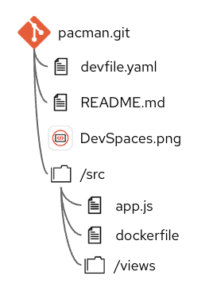
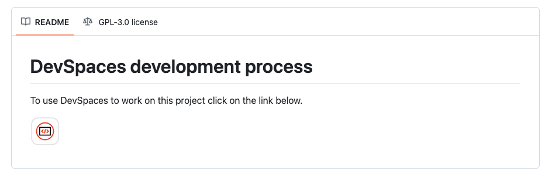
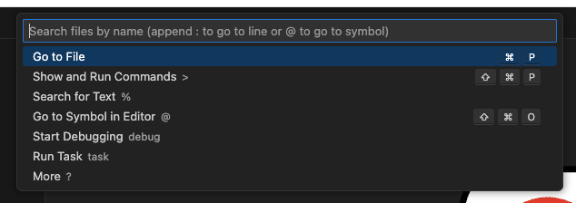
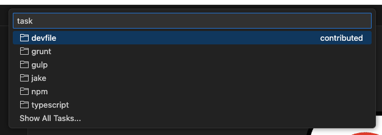
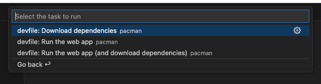
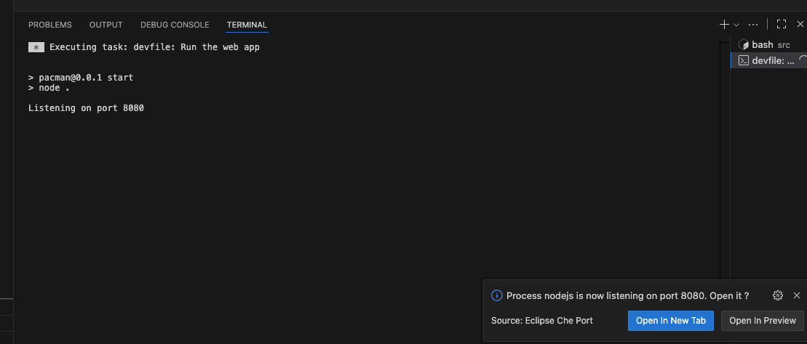
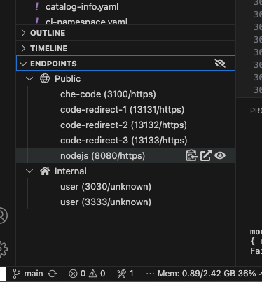
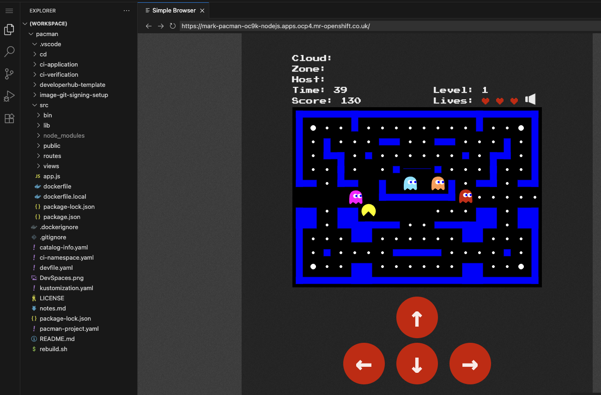

Creating a workspace - part 2
In this section you will launch the workspace using a link in a Git repository. This is a particularly helpful way to get into a workspace since all the user needs is a link to the Git repository. The information on how to launch the workspace is included in the repository readme file.
In the previous section you explored the workspace. Since this exercise uses the same workspace you will be using workspace tasks to run the application code and interacting with the running application.
Accessing a workspace from a Git repository
The Git repository structure is shown below.

The README.md file has a URL link that can launch DevSpaces with the specific devfile.yaml in the root of the repository. The URL link in the readme uses an icon to make it look better.
The format of the URL link in the readme file is :
[<image specification](<dev-spaces.url>/dashboard/#/load-factory?url=<git-repository-url>)|
The Git repository needs to have a devfile.yaml file in the root of the repository. |
The rendered result of the readme.md file when viewed through the Git web UI is shown below.

The relevant section of the README.md containing the link to the devfile in the pacman.git repository is shown below :
[<img src=DevSpaces.png width=50>](https://devspaces.apps.ocp4.mr-openshift.co.uk/dashboard/#/load-factory?url=https://github.com/marrober/pacman.git)Launch the workspace
Each workshop user has their own cluster on which to operate for the workshop. This is important as we want you all to experience the process of installing operators and the VS Code extension repository setup. Since these tasks can only be done once per cluster it is not possible to share a cluster.
Due to this we need to simulate the use of the Git repository launch of a Dev Spaces workspace. You can take a look at the readme file for the Git repository mentioned above at the link below, but please do not click on the link to launch a workspace.
https://github.com/marrober/pacmanThe link below is a custom link to launch DevSpaces in your personal cluster against the devfile in the repository mentioned above.
Copy the link from below and paste into a new browser tab. You may be asked to provide your credentials again for the 'cluster-admin' user and the password that you have access to from the workshop launcher application.
https://devspaces.%CLUSTER_SUBDOMAIN%/dashboard/#/load-factory?url=https://github.com/marrober/pacman.gitThe workspace creation process will then begin and the progress will be indicated as shown below.

As soon as the workspace has loaded the display will change to be similar to that which is shown below. You are promoted to trust the author of the content being cloned into the workspace. Generally you will be cloning trusted content from you organisations' repositories so you can expect to say yes to this if it is internal content.

The welcome screen gives information and links. This page can be dismissed in the same manner as closing a file in VS Code.
Examining the contents of the repository
In addition to the file browser on the left hand side of the workspace the terminal window can also be used to examine the files that exist within the workspace. Open a terminal window by clicking on the three bar menu on the top left hand corner and selecting terminal as shown below.

Execute the command below in the terminal to see the directory structure including the current location and the content of the directory. This should match with the paths mentioned above in the commands section.
pwd; lsRunning the application
The devfile content was shown in the previous section, and the section referring to command execution is repeated below for reference.
commands:
- id: 1-dependencies
exec:
label: Download dependencies
component: tools
workingDir: ${PROJECTS_ROOT}/pacman/src
commandLine: npm install
group:
kind: build
- id: 2-run
exec:
label: Run the web app
component: tools
workingDir: ${PROJECTS_ROOT}/pacman/src
commandLine: npm start
group:
kind: run
- id: 3-install-and-run
exec:
label: Run the web app (and download dependencies)
component: tools
workingDir: ${PROJECTS_ROOT}/pacman/src
commandLine: npm install; npm start
group:
kind: runThe commands enable us to run the application in a two step process or a single step.
Two step process
Firstly download the project dependencies using the 'Download dependencies' command. Click in the workspace search section at the top of the screen to display the first level of task options as shown below.

Select the option 'Run task' from the above menu. This will display a second menu from which you can select the source of the task you wish to run as shown below.

Select 'devfile' as the source of the tasks and you will see the menu shown below. The commands listed here match the labels of the commands in the devfile shown above.

Select 'download dependencies' task.
The dependency download will then run in the terminal window and the output will be displayed. When you have ready anything that you need from the terminal window click into it and press any key to dismiss the results.
In the terminal window run the following commands to see that the time of the creation of the node_modules directory was just a minute or two ago.
clear
cd ${PROJECTS_ROOT}/pacman/src
ls -al | grep node_modulesRepeat the process described above to execute the command 'Run the web app'. The result will be similar to what is shown below.

The terminal window shows that the application has started and is listening on port 8080. The prompt in the bottom right corner is indicating that the application is listening on this port and it gives you the option to open the application in either :
-
A new tab - Launch the application in a separate browser tab alongside the workspace.
-
Open in preview - Launch the application web page in a page within the workspace similar to an editor page.
To stop the application when launched click on the terminal area that shows the application listening on port 8080 and press control-c.
If you happen to miss the pop up window in the bottom right hand side of the screen then don’t panic. It does timeout after a while, but you can simply open the endpoints list in the left hand side menu underneath the file browser as shown below.

Each published endpoint is listed above and as you position the mouse over each endpoint, three icons popup on the right hand side of the listed endpoint as shown above for the nodejs(8080/https) endpoint. The icons give you the following options :
-
Left icon - copy the url for pasting into another window or for use with commands on a terminal such as curl.
-
middle icon - Launch the url in a new browser tab.
-
Right icon - Open the url in preview mode alongside editor files in the workspace.
Open the application url in either new browser tab or preview mode now.
When you launch the application you will see the old faithful Pacman game from the 1980’s. If you click to play you will see the background colour get brighter and you can use the arrow keys to move the yellow character around the screen eating white dots, as shown below for the preview option. You can move your character around the screen using either the arrow keys on the keyboard or the red arrows shown on screen. If you feel like a break, try to clear the screen.

|
You will see an error in the terminal window because the application does not have a database to which it can connect to store player high scores. This is not a problem for a simple execution of the application for testing. |
Live code editing
DevSpaces offers a facility for live code changes for certain specific languages, such as NodeJS in which this Pacman game was written. In the file browser on the left hand side of the screen open the file :
src/public/pacman-canvas.jsThe file will open in a new browser tab, which will be alongside the Pacman application if you launched it in preview mode. Scroll down to line 292 and you will see a line of code as shown below.
this.wallColor = "Blue";|
Note the VS Code syntax colouring of the code window. |
Change the colour blue to any primary colour such as Red, Green, White, Grey, Magenta, Cyan, Yellow. Black is probably not a great colour to choose. Just ensure that your chosen colour has a capital letter at the start of the word.
Immediately you have made the change switch to the running application in either a separate browser tab or an editor window alongside the source code if you used preview mode. Refresh the browser window and you will see the colour of the border for the game change.